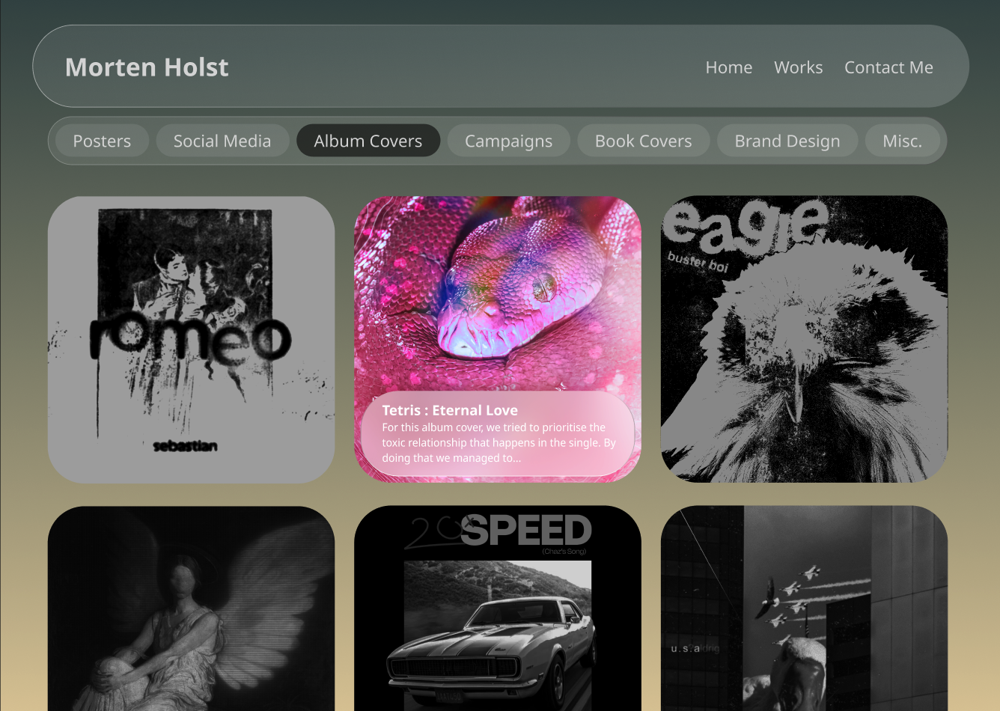
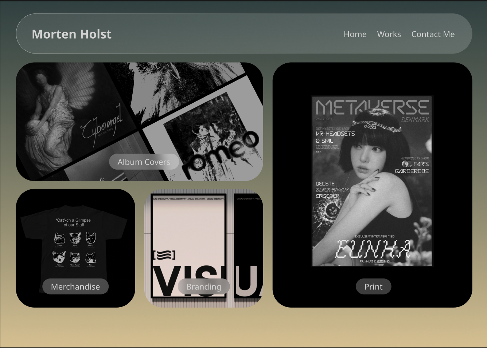

Portfolio Koncept i Figma
Som en del af vores selvstudiedag d. 5 September 2024, skulle vi lave en portfolio styled hjemmeside inde i FIGMA. Målet med opgaven var at vi skulle lære at bruge noget visuelt hieraki og lave 3 forskellige versioner af forsiden på vores portfolio. Jeg valgte at gå igang med opgaven, ved at inkludere ting som jeg tidl. har lavet inde i Adobe Photoshop, og lege samtidigt lidt med noget 'Glassmorphism'.
Version 1.0
 I min første version, fik jeg skabt et projekt fokuseret design. Min generalle ide var at det skulle være et slider hvor man kunne køre igennem projekterne. Kriterierne var at der var maks 5 projekter ad gangen, og det nyeste projekt var først. Når et projekt blev nummer 5 i slideren, røg det ud af rotation. Dog gik jeg hurtigt væk fra den ide, da den nok primært ville inkludere de 5 nyeste projekter lagt op på hjemmesiden, og det ville være svært at finde frem til særligt meget mere. Ideen kunne have udviklet sig bedre hvis der var en mulighed for at man kunne scroll ned og se mere og/eller se kategorier og browse i dem. Det var også her hvor jeg fik primært sat igang på min navigationsbar, som fik denne glassmorphism baggrund.
I min første version, fik jeg skabt et projekt fokuseret design. Min generalle ide var at det skulle være et slider hvor man kunne køre igennem projekterne. Kriterierne var at der var maks 5 projekter ad gangen, og det nyeste projekt var først. Når et projekt blev nummer 5 i slideren, røg det ud af rotation. Dog gik jeg hurtigt væk fra den ide, da den nok primært ville inkludere de 5 nyeste projekter lagt op på hjemmesiden, og det ville være svært at finde frem til særligt meget mere. Ideen kunne have udviklet sig bedre hvis der var en mulighed for at man kunne scroll ned og se mere og/eller se kategorier og browse i dem. Det var også her hvor jeg fik primært sat igang på min navigationsbar, som fik denne glassmorphism baggrund.
For mig var denne glassmorphism en del som designet der gav mindre fokus på selveste navigationen af hjemmesiden og mere på hvilke projekter der var på hjemmesiden. Dette var en del jeg valgte at beholde igennem de 2 andre versioner af forsiden, da jeg synes det gav en alternativ og unik navigationsbar - som senere også bliver brugt andre steder i de andre versioner.
Version 2.0
 I version 2 bliver forsiden til en slags work-page. Siden inkludere alle projekter under et bestemt tag, som f.eks. i billedet er Album Covers. Herefter vil alle album covers komme op i række efter hinanden. Ved at hover over en af dem, kommer der farve på album-coveret og det bliver supplemeret med titlen på projektet samt indhold på artikelen. Dog var jeg ikke så vild med den ide i sidste ende, vi havde brug for at gøre kanterne runde, ellers ville det ikke passe med flowet på hele siden samt at boksen inde i også skulle være rund fik teksten til at virke som om den ikke tilhørte der. Derfor gik jeg væk fra den ide. Dog, selvom ikke brugt i andre ideer var jeg vild med ideen om et filter-system.
Grundet vi skulle til at have de her filtre, skabte jeg et nemt og overskueligt filter-system. Med måske nogle overfladiske navne, skulle de også have en seperat menu at gå ind i. De fik samme glassmorphism effekt som navigationsbaren fik, og fungerede i henholdsvis til den. Generalt synes jeg den virker godt, og er med til at skabe en nem bruger oplevelse, som nok er det eneste positive jeg kan tage med fra denne version.
Version 3.0
 I den sidste version af forsiden til portfoliet, gik jeg med en revamped ide fra version 2. Alle kategorierne kom ud på forsiden, og havde den samme grayscale ide hvor hvis man hover over at det får en farve. Alt var ude og nemt at tage fat i og bare gå ind på en kategori og se det arbejde som vil passe kunden bedst. Nogle af boksene er større for at markere hvad jeg primært arbejder med, men også det andet på forsiden som jeg også kan arbejde med, selv hvis jeg muligvis har mindre ekspertise inden for det.
Og vores elskede glassmorphism lever videre i denne version også, her fik den lov til at shine igennem at være kategori-navenes baggrund, som igen - som sagt før - skaber denne identitet jeg gerne vil have med, mens den ikke drager alt for meget fokus væk fra hvad projekterne er.